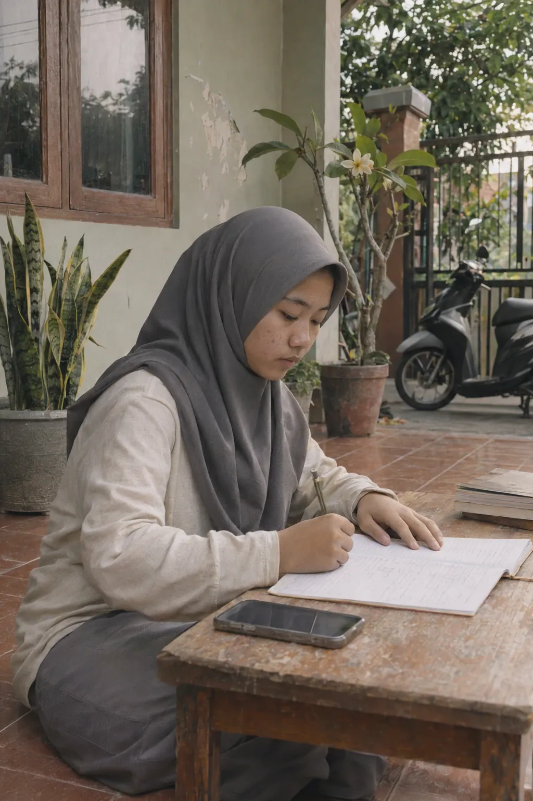
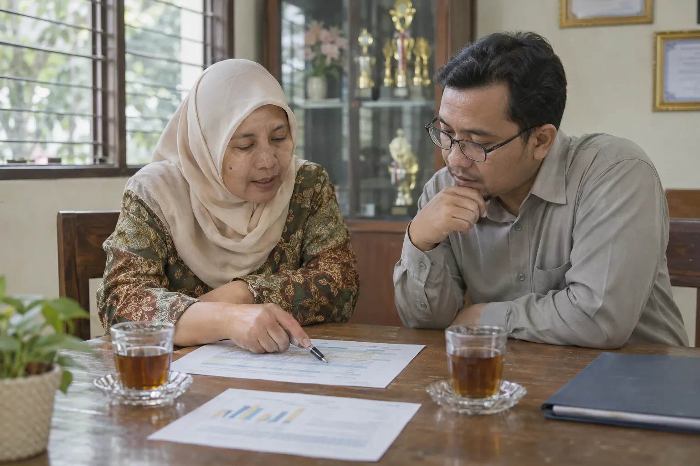

Who It’s For
For everyone involved in learning.
Schools, universities and training programmes. Four roles, and the institution as a whole, each with a practical benefit.

01 · Learners
School pupils, students and trainees
Know what to do next.
- 01Assignments and the next step on one page.
- 02Step-by-step help while learning: a direction to think in first, then one step at a time.
- 03Their own results by learning objective, without rankings or comparison with classmates.
- 04Certificates whose authenticity others can check.

02 · Educators
Teachers, lecturers and facilitators
Know what to revisit tomorrow, and for whom.
- 01The parts and questions a class found hard, including the answer options chosen most often.
- 02Learners who may need help, as something to consider, not a label.
- 03Material you can give to a class, plus your own.
- 04Professional-development programmes you take part in, kept apart from performance review.

03 · Leadership
Principals, heads of department and deans
See patterns instead of guessing.
- 01Patterns of mastery across the classes you are responsible for.
- 02Figures with a clear basis: shown when there is enough data, with a note when there is not.
- 03Class and school summaries ready to print for a meeting.
- 04Opening one learner’s record only deliberately, and the action is recorded.
One person, one account
- School AEducatorTeaches Class 8B: gives it material and sees its results.Assigned by School A
- School BAdministratorManages accounts and classes at School B.Appointed by School B
- Teacher training programmeParticipantTakes part in their own training, kept apart from academic results.Enrolled by the organiser
04 · Administrators
School operators and institution administrators
Manage access, not learning decisions.
- 01Accounts, classes, groups and roles in one place.
- 02Class cards for learners, replaceable when lost.
- 03Transfers, moving up and retirement without losing records that need to be kept.
- 04Consequential changes record who, what, when and why.

05 · The institution as a whole
Foundations, governing bodies and institutional leaders
A learning record that can be explained.
- 01Shared material, plus material that belongs to your institution.
- 02Your institution’s data kept separate from other institutions.
- 03Records that stay whole as people come and go.
- 04An honest basis for meetings, decisions and reporting.
Request a demo
See PINTAR from where you sit.
Tell us your role, and we will prepare a guided demonstration with suitable sample data.